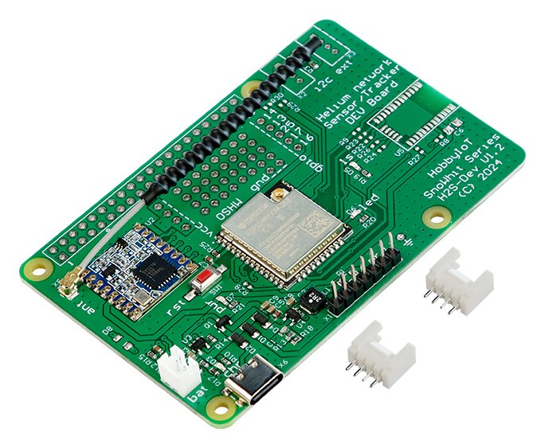

H2S-Dev V1.2
Ready-to-use, open source, Arduino-compatible ESP32 LoRa board for Meshtastic, Helium and other LoRa applications. Aimed at makers and hobbyists.
ESP32-WROOM-32UELoRa SX1276 · 868 / 915 MHz2× I²C (Crowtail)USB-C (power only)Programming via header (external programmer)LiPo chargingOptional GNSS (Full variant)